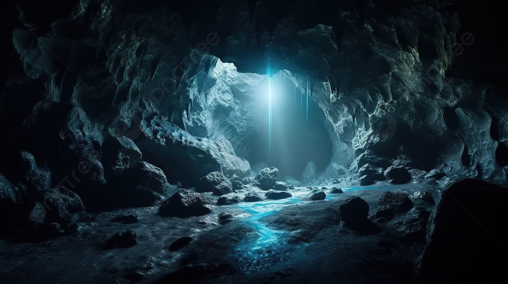

Você está no início de uma jornada. Escolha seu destino inicial:
Você entra na Floresta Mística e logo encontra dois caminhos. Qual você vai seguir?
Na Montanha Assombrada, você ouve um som distante. O que fará?
O Caminho da Luz o leva a um paraíso escondido. Você encontrou o final feliz!
O Caminho das Sombras é traiçoeiro e leva você a um beco sem saída. Fim de jogo.

Ao investigar o som, você descobre uma caverna secreta cheia de tesouros. Parabéns, você encontrou o final secreto!
Você ignora o som e continua subindo a montanha, mas nunca encontra o que estava procurando. Fim de jogo.